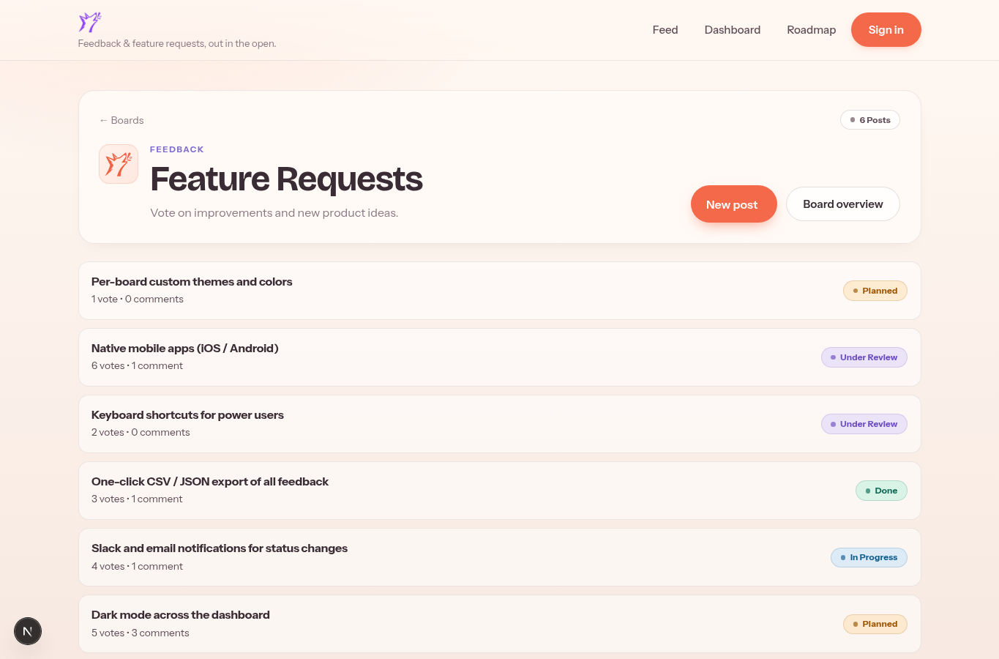
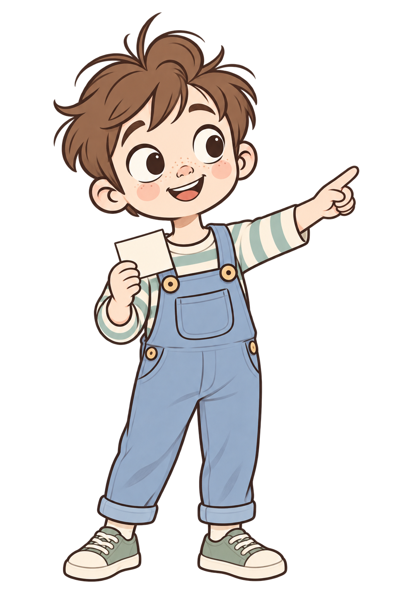
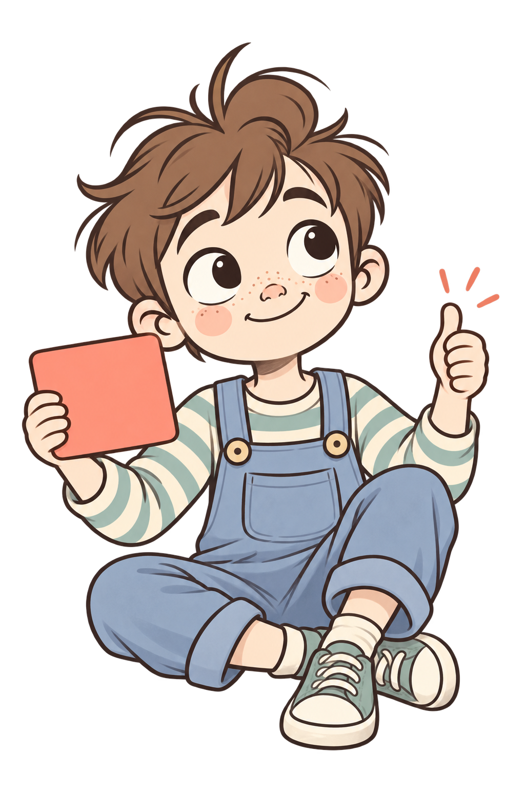

Give feedback a place
People share requests and report bugs on the right board, with context your team can use.
Bug reports & ideasGive ideas and bug reports a home. Your users can post, vote, and see what your team is working on without chasing updates.
Explore a real boardA live Howllo workspace, open to explore.


From the real board · 6 postsKeep the conversation in one place so your team and your users always know what happened next.
People share requests and report bugs on the right board, with context your team can use.
Bug reports & ideasVotes and comments surface the needs people care about, instead of burying them in chat.
Votes & conversationMove work from review to done. Everyone can follow the status without asking again.
Review → In progress → DoneKeep different topics organized with separate boards. Each workspace has its own members, settings, and public feedback space.
Boards from the live Howllo workspace
Hear the signal, keep the context, and make the next step visible.
